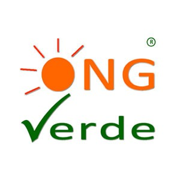
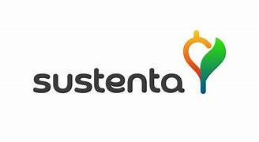

Home
Aprenda
Pontos de Coleta
Informativo
Dicas e Horários
ONGs
Cursos
Missão, Visão e Valores
ONGs Parceiras
Conheça algumas instituições que colaboram com o ReciclaMais:
 🌿 ONG Verde Vida
♻️ Instituto Reciclar
 🌍 Projeto Sustenta
 ♻️ Instituto Reciclar ♻️ Instituto Reciclar
♻️ Instituto Reciclar ♻️ Instituto Reciclar